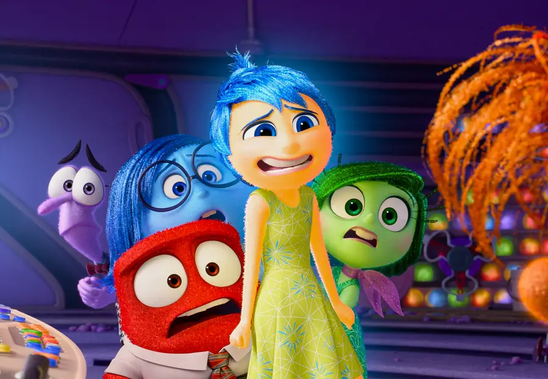
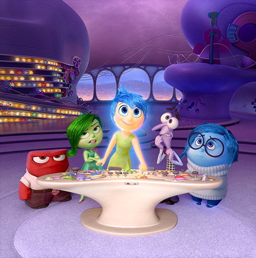
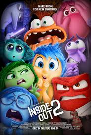
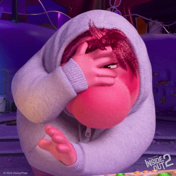
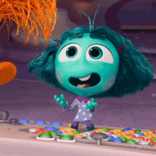
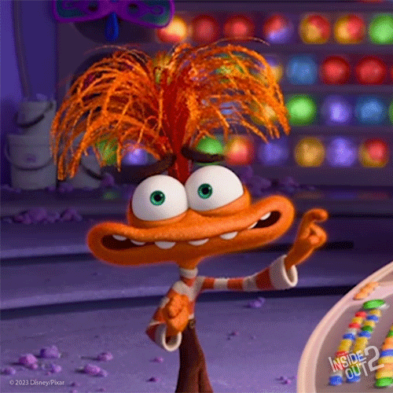

| İnsideOut | ÖlüGelin | Elemental | Zootopia | Arabalar |
Ters Yüz, Walt Disney Pictures için Pixar Animation Studios tarafından üretilen2015 yapımı Amerikan animasyon gençlik filmidir . Yönetmenliğini Pete Docter'ın Meg LeFauve ve Josh Cooley ile birlikte yazdığı senaryodan. Filmde Amy Poehler , Phyllis Smith , Richard Kind , Bill Hader , Lewis Black , Mindy Kaling , Kaitlyn Dias, Diane Lane ve Kyle MacLachlan seslendirme yapmaktadır . Ters Yüz , beş kişileştirilmiş duygunun düşüncelerini ve eylemlerini yönettiği ailesinin taşınmasına uyum sağlayan genç bir kız olan Riley'nin zihninin iç işleyişini takip eder. Docter, kızının büyüdükçe kişiliğindeki değişiklikleri gözlemledikten sonra Ekim 2009'da Ters Yüz'ü tasarladı. Proje daha sonra onaylandı ve Docter ile yardımcı yönetmen Ronnie del Carmen, zihni doğru bir şekilde tasvir etmek için psikologlara ve sinirbilimcilere danışarak hikâyeyi geliştirdi. Yaklaşık 175 milyon dolarlık bir bütçeyle beş buçuk yıl süren geliştirme süreci, filmin hikâyesinde ve karakterlerinde yapılan önemli değişiklikler nedeniyle yapım takviminde gecikmelere yol açtı . Ters Yüz, 18 Mayıs 2015'te 68. Cannes Film Festivali'nde prömiyerini yaptı ve 19 Haziran'da Amerika Birleşik Devletleri'nde gösterime girdi. İşçiliği, senaryosu, konusu, olay örgüsü ve ses performanslarıyla (özellikle Poehler, Smith, Kind, Hader, Kaling ve Black'in ses performansları) eleştirmenlerden büyük beğeni topladı. Ulusal İnceleme Kurulu ve Amerikan Film Enstitüsü, Ters Yüz'ü 2015'in en iyi on filminden biri olarak gösterdi . Dünya çapında 858,8 milyon dolar hasılat elde ederek sinemalarda gösterime girmesini 2015'in en çok hasılat yapan yedinci filmi olarak tamamladı. Film, 88. Akademi Ödülleri'nde iki ödüle aday gösterildi , En İyi Animasyon Filmi ödülünü kazandı ve çok sayıda başka ödül aldı . Felsefe dergisi Film and Philosophy, Ters Yüz'ü şimdiye kadar yapılmış en iyi animasyon filmlerinden biri olarak kabul etti . Devam filmi olan Ters Yüz 2 , 2024'te gösterime girdi.
Riley Andersen adlı genç bir kızın zihninde, eylemlerini etkileyen beş kişileştirilmiş duygu vardır: Neşe , Üzüntü , Korku , Tiksinti ve Öfke . Riley'nin deneyimleri, renkli küreler olarak saklanan ve her gece uzun süreli belleğe gönderilen anılara dönüşür . Kişiliğindeki en önemli beş "çekirdek anı"nın unsurları, beş yüzen ada şeklini alır. Neşe, lider rolü oynar ve Üzüntü'nün etkisini sınırlamaya çalışır; onu Riley için gereksiz bir yük olarak algılar. Riley, 11 yaşındayken babasının yeni işi için Minnesota'dan San Francisco'ya taşınır. Yeni okulundaki ilk gününde, Üzüntü geçmişe dönük olarak neşeli anıları üzer ve Riley'nin sınıfın önünde ağlamasına neden olur. Bu, Riley'nin ilk hüzünlü temel anısını oluşturur. Neşe, pnömatik bir tüp kullanarak anıdan kurtulmaya çalışır , ancak Üzüntü ile mücadelesi sırasında diğer temel anıları da serbest bırakarak kişilik adacıklarını devre dışı bırakır. Neşe, Üzüntü ve temel anılar Karargah'tan emilir. Neşe ve Üzüntü'nün yokluğunda, Öfke, Korku ve Tiksinti mutlu temel anılar yaratmaya çalışır, ancak sonuçlar felaket olur ve Riley'yi ailesinden, akranlarından ve hobilerinden uzaklaştırır. Temel anılar olmadan Öfke, Riley'nin kişilik adalarının parçalanmasına ve "Hafıza Çöplüğü"ne düşmesine neden olur; burada her şey unutuldukça yok olur. Neşe ve Üzüntü, geniş uzun süreli hafıza alanında gezinirken, Riley'nin çocukluk hayali arkadaşı Bing Bong ile karşılaşır ve Bing Bong, " düşünce trenine " binerek Karargâh'a geri dönmeyi önerir . Bu arada, Riley'nin mutluluğunu geri getirmeyi amaçlayan Öfke, Tiksinti ve Korku'yu Riley'nin mutlu anılarının oluştuğu Minnesota'ya kaçması konusunda ikna eder. Neşe, Üzüntü ve Bing Bong trene yetişir, ancak başka bir ada çökünce tren raydan çıkar. Neşe, Karargâh'a geri dönmek için bir "hatırlama tüpüne" binmeye çalışır, ancak tüpün altındaki zemin çöker ve Bing Bong ile birlikte Hafıza Çöplüğü'ne düşer.
Joy, Riley'nin bir hokey maçını kaybetmesinin üzücü anısını keşfeder ve Riley'nin ailesi ve arkadaşlarının onu teselli etmesiyle bu durum mutluluğa dönüşür. Riley duygusal olarak bunaldığında ve yardıma ihtiyaç duyduğunda, Üzüntünün başkalarını uyarma amacını anlar. Joy ve Bing Bong, şarkıyla çalışan vagon roketini kullanarak Hafıza Çöplüğü'nden kaçmaya çalışırlar, ancak toplam ağırlıkları nedeniyle yukarı çıkamazlar. Son bölümde, Bing Bong, kaybolmadan önce vagondan atlayarak hafıza çöplüğündeki Joy'u kurtarmak için kendini feda etmeyi başarır. Öfke'nin fikri konsolu devre dışı bırakır ve Riley, Minnesota'ya giden bir otobüse binerken depresyona girer . Sevinç, Üzüntü ile yeniden bir araya gelir ve Karargâh'a dönerler. Sevinç, konsolun kontrolünü Üzüntü'ye devreder, bu da diğerlerinin büyük şaşkınlığına ve kafa karışıklığına yol açar. Üzüntü, fikir ampulünü konsoldan başarıyla çıkarır, yeniden başlatır ve Riley'nin otobüsten inip eve koşmasını sağlar. Riley'nin ailesine gerçeği anlatması gerektiğini fark eden Sevinç, Üzüntü'ye temel anıları verir ve böylece onları üzebilir. Riley, ailesine eski hayatını özlediğini söyleyerek gözyaşlarına boğulur. Riley'nin ailesi onu teselli eder ve Minnesota'yı özlediklerini söyler. Üzüntü, Joy'u konsolda ellerini birleştirmeye zorlar ve hem mutlu hem de hüzünlü yeni bir temel anı yaratır ve Riley'nin San Francisco'daki hayatını kabullenmesini temsil eden yeni bir ada oluşur. Bir yıl sonra, 12 yaşındaki Riley yeni evine uyum sağlamış, yeni arkadaşlar edinmiş ve yeni hobiler edinmiştir. Karargahın içinde, Riley'nin duyguları, çeşitli duyguların bir karışımını içeren yeni çok renkli temel anılarla desteklenen yeni kişilik adalarına hayran kalır ve bir ekip olarak çalışabilecekleri kadar alana sahip genişletilmiş bir konsol verilir. Ergenliği işaret eden kırmızı alarm ışığı konusunda hafif endişelerini kabul etmelerine rağmen , şu anda bunun önemli olmadığına karar verirler.

Inside Out 2, Walt Disney Pictures için Pixar Animation Studios tarafından üretilen2024 yapımı Amerikan animasyon gençlik filmidir . Inside Out (2015) filminin devamı olan film, ilk uzun metrajlı film yönetmenliği denemesi olan Kelsey Mann [ c ] tarafından yönetilmiş ve Mark Nielsen tarafından, Meg LeFauve ve Dave Holstein tarafından yazılan senaryove Mann ile LeFauve tarafından tasarlanan hikayeden üretilmiştir. San Francisco'ya taşınmasından iki yıl sonra, [ d ] 13 yaşındaki Riley Andersen liseye başlıyor. Kişileştirilmiş duyguları -Neşe , Üzüntü , Korku , Tiksinti ve Öfke- artık Riley'nin zihninde yeni oluşan ve Riley'nin inançlarını şekillendiren anıları ve duyguları barındıran " Benlik Duygusu " adlı bir unsuru yönetiyor. Benlik Duygusu'nu yalnızca iyi anılarla doldurmayı hedefleyen Neşe, kötü anıları Riley'nin zihninin arka planına gönderen yaylı bir mekanizma yaratmış. Riley ve en yakın arkadaşları Bree ve Grace, Riley'nin yeni okulunun takımı Fire Hawks'a katılmayı umduğu üç günlük bir buz hokeyi kampına davet edilir. Karargah'ta, önceki filmden kalma bir " ergenlik alarmı" kamptan önceki gece çalar ve birkaç zihin çalışanı, Karargah'ı darmadağın ederken duygu konsolunu aniden yükseltir. Duygular, Riley'nin artık konsola yaptıkları her girdiye aşırı tepki verdiğini fark eder. Dört yeni duygu - Kaygı , Kıskançlık , Utanç ve Can Sıkıntısı - ortaya çıkar ve yaklaşımları konusunda orijinal duygularla çatışır. Özellikle Joy, Riley'nin kampta eğlenmesini isterken, Kaygı takımda bir yer kazanmaya ve yeni arkadaşlar edinmeye odaklanır, özellikle de Bree ve Grace'in farklı bir liseye gidecek olması nedeniyle. Joy'un kontrolü altında Riley, istemeden katı kamp yöneticisi Koç Roberts tarafından kampçıların başını belaya sokar. Riley'nin eski oyunculara uyum sağlamak için değişmesi gerektiğine karar veren Kaygı, Benlik Duygusu'nu zihninin arka planına fırlatır ve eski duyguların bastırılıp bir hafıza kasasına atılmasına neden olur. Yeni duygular daha sonra kaygının egemen olduğu yeni bir Benlik Duygusu yaratır ve Riley'yi popüler hokey oyuncusu Valentina "Val" Ortiz ile arkadaş olmaya teşvik ederek Bree ve Grace ile olan dostluğunu zedeler. Orijinal duygular kasadan kaçtıktan sonra Joy, Hüzün'ü telsizle Karargah'a geri gönderir ve o ve diğerleri Benlik Duygusu'nu ele geçirir. Hüzün, Utanç tarafından keşfedilir ve gizli kalmasına yardım etmeye karar verir.
Kaygının kontrolü altında Riley, Koç Roberts'ın ofisine gizlice girer ve not defterinden Riley'nin henüz bir Ateş Şahini olmaya hazır olmadığı düşünüldüğünü öğrenir. Dört orijinal duygu, Joy'un mekanizması tarafından biriktirilen kötü anılar dağının üzerinde eski Benlik Duygusu'nu bulur. Joy'un planını telsizden duyan Kaygı, geri çağırma tüpünü yok eder ve Joy ile diğer duyguları Riley'nin zihninin arka tarafında mahsur bırakır. Joy, kendine güvenen ve kendinden nefret eden bir bireye dönüşen Riley'yi nasıl kurtaracağını bulamadığı için yıkılır. Duygular, kötü anıları destekleyen uçurumu patlatmak için dinamit kullanır ve onları inanç havuzuna savurur. Karargah'a dönmek için anı seline kapılırlar. Kaygı, yeni bir Benlik Duygusu yaratma planının ters teptiğini, kendinden şüphe ve aşağılık duygusu yarattığını fark eder ve bu da Riley'nin son deneme maçında kötü bir performans sergilemesine, yanlışlıkla Grace'e çarpmasına ve ceza sahasına gönderilmesine neden olur . Dehşete düşen Anksiyete, Riley'e yardım etmeye çalışır ancak kör edici bir hortumla konsolu çılgınca istila eder ve Riley'nin bir anksiyete krizi geçirmesine neden olur .
Karargâha dönen Joy, Anksiyete'yi hâlâ kontrol altında ama felç olmuş ve çok üzgün bulur; Joy, Riley'nin daha iyi bir geleceğe sahip olmak için değişmesi gerekmediğine onu ikna eder. Anksiyete yumuşar ve Joy, Riley'nin orijinal Benlik Duygusunu geri getirir, ancak panik atak devam eder. Anksiyete, ne kendisinin ne de diğer duyguların Riley'nin kim olduğunu seçemeyeceğini kabul ederek Joy'dan özür diler. Anksiyete'nin doğruyu söylediğini fark eden Joy, ilk Benlik Duygusunu ortadan kaldırır ve Riley'nin hem iyi hem de kötü anılarından yeni bir Benlik Duygusu oluşmasına izin verir. Duygular bu üçüncü benliği kucaklayarak Riley'yi sakinleştirir ve Bree ve Grace ile barışmasına yardımcı olur. Konsol, kontrolü yeniden ele alan ve Riley'nin hokey seçmelerini mutlu bir şekilde bitirmesine yardımcı olan Joy'u çağırır. Riley, lisedeyken Val ve diğer Ateş Şahinleri ile arkadaş olur ve Bree ve Grace ile arkadaşlığını sürdürür. Huzur içinde yaşayan dokuz duygu, Riley'i korumak için birlikte çalışır; Riley ise neşeyle telefonundan Ateş Şahinleri'nin işe alım sonuçlarını kontrol eder.
 